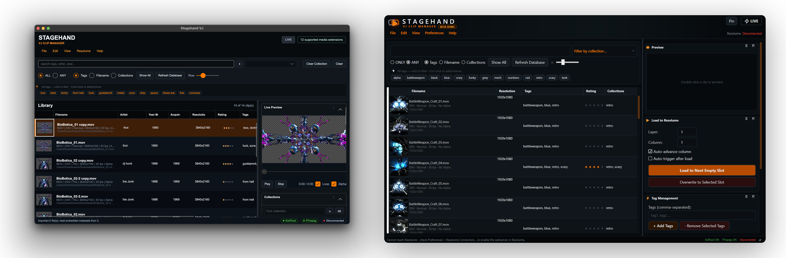
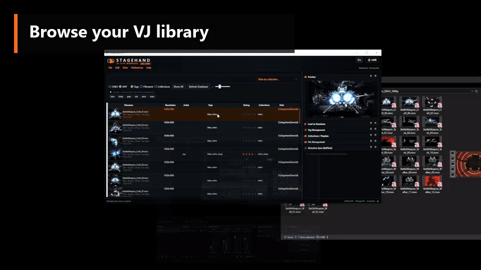
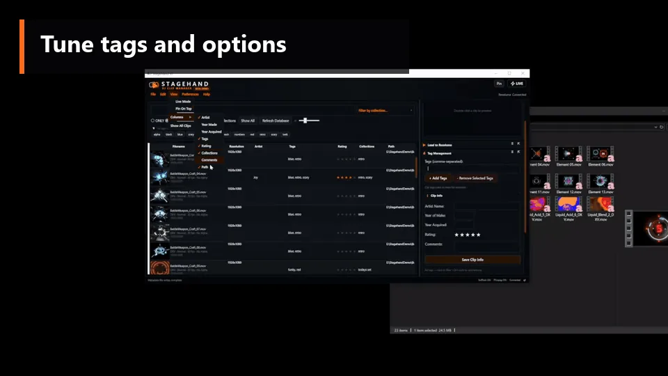
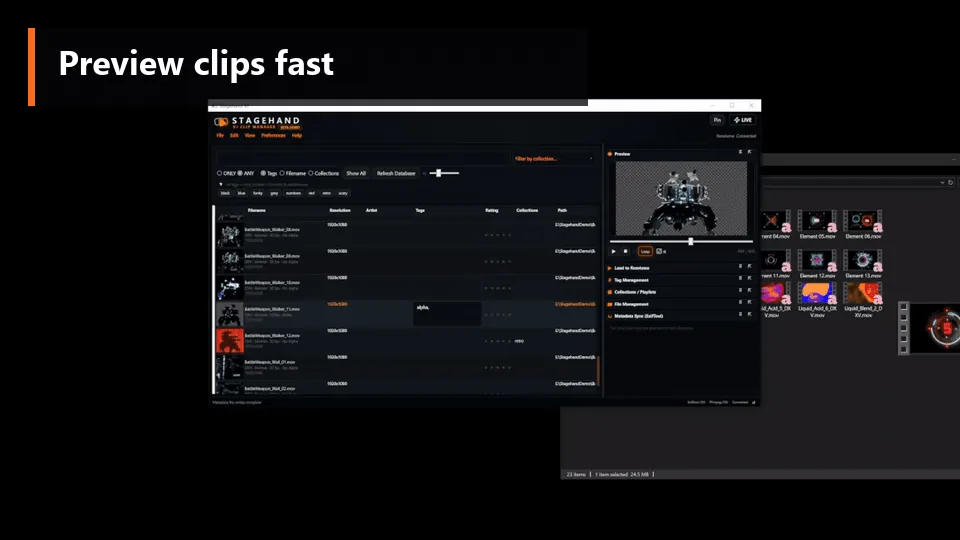
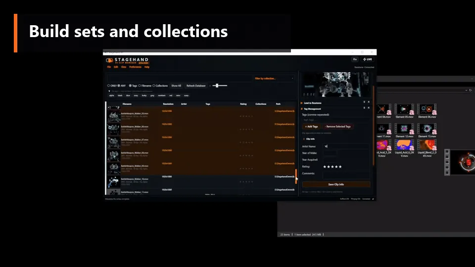
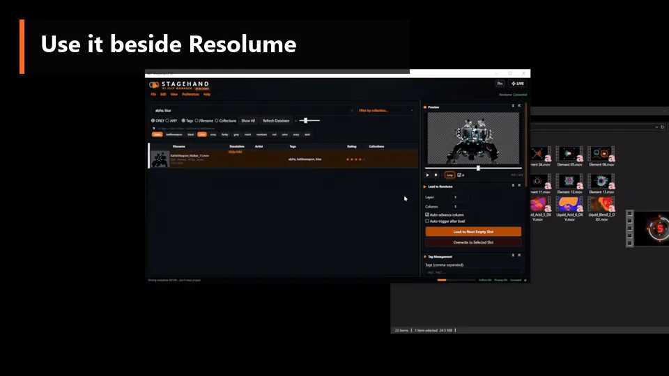

Stagehand indexes your VJ clip library locally, tracks tags, ratings, and collections, and pushes clips into Resolume via drag-and-drop or REST. Portable metadata, signed binaries, no cloud.
Same app. Demo caps batch export at 10 files per session — activate any time to unlock.

Tag, rating, and collection metadata typically end up encoded in folder names and filenames — workable until a library grows past a few hundred clips. Stagehand provides a dedicated local index, a metadata layer that writes back into the files themselves, and a clean handoff into Resolume via drag-and-drop or REST.
The five stages of working in Stagehand, from import through Resolume handoff.
Point Stagehand at your clip drive. Thumbnails, codec, FPS, alpha, and existing metadata import in one pass.
Multi-tag across batches. Star-rate clips. Auto-tag from existing folder names if your library is already structured.
Filter by tag, rating, collection, codec. ALL or ANY matching across filename, tags, collections, and metadata.
Inline video playback. Loop, scrub, and toggle alpha checkerboard to confirm transparency before commit.
Push the selected clip into a Resolume layer + column. Optional auto-advance and auto-trigger after load.
Each section is a cropped view of the app showing one part of the workflow.
Drop a folder onto Stagehand and it reads codec, FPS, alpha, resolution, thumbnails, and any tags already present in file metadata. Existing folder structure becomes a searchable index without renaming a single file.


Tag in batches, apply star ratings, edit Artist/Year/Comments directly in the grid. Multi-clip edits use a "tick what to apply" panel so a Rating change can't silently overwrite Artist on the selection.
Double-click any clip to preview in the right panel. Loop, scrub, and toggle an alpha checkerboard to verify transparency before committing the clip to a collection or Resolume slot.


Group clips into named collections — by show, residency, mood, or year. A clip can belong to any number of collections. Filter the grid to one collection in a single click. No duplication on disk, no copy-pasting into "show folders."
Send the selected clip into Resolume at a chosen layer + column, with optional auto-advance and auto-trigger. Ctrl+Enter loads. Ctrl+Shift+V pulls clips from Resolume back into Stagehand for editing or re-tagging. Pin-on-top + live mode keep the app accessible alongside Resolume.

Stagehand writes tags, ratings, artist, year, and collections back into the files themselves — into the standard metadata fields that Windows Explorer, Finder, and other media tools already read. Move a clip to another machine and the metadata travels with it. Switch tools later and the work isn't trapped in a proprietary database.
Native binaries on Windows and macOS, all dependencies bundled. No runtime installs, no admin rights, no package managers.
Windows 10/11 x64 plus native macOS — Apple Silicon arm64 and Intel x64. Mac builds are Developer ID signed, notarized, and stapled. Gatekeeper accepts on first launch — no right-click-Open dance.
Video processing, codec analysis, and metadata writing tools all ship inside the installer/.app. No Homebrew, no Chocolatey, no .NET runtime, no Python. Drag and run. Per-arch native binaries on Mac.
Fast SQLite index on your machine. No cloud sync, no sign-up, no telemetry by default. One-time licence activation — after that, Stagehand runs entirely offline.
Additional capabilities outside the headline workflow.
Moved a drive or renamed a folder? Stagehand detects missing files and lets you relink one — then smart-relinks the rest in the same folder automatically. Tags stay intact.
Detects codec, FPS, alpha, quality, and resolution automatically — with specialised support for DXV, the Resolume-native codec.
Finder/Explorer-style columns you can reorder and resize. Inline-edit Tags, Collections, Artist, Year, Rating, and Comments without opening a popup.
After an import or edit, new clips appear in the grid automatically when the user isn't actively typing or selecting.
A single button switches to a minimal performance layout. Pin above Resolume on a second monitor or tablet without consuming screen real estate.
Each licence covers two machines — typically a primary and backup rig. Deactivate from inside the app to free a slot when a machine is retired.
Each Stagehand database carries its own creator, comment, and timestamps, displayed at the top of the Database panel. Useful when swapping DBs between rigs.
Ctrl+Enter loads to Resolume, Ctrl+Shift+V pastes clips from Resolume, F5 reconnects to the Resolume API.
Windows installs to %LOCALAPPDATA% with no admin rights. Mac is a signed .app drag-install. Settings and database survive reinstalls.
Same binary in both tiers. The licence simply removes the demo's export cap. No subscription, no account, and every update through 1.0 is included.
Test the workflow on your real files.
Signed & notarized · clips not included · Windows on r47, Mac on r35
The full app, unlocked. One-time payment, includes every update through 1.0.
Secure checkout by Lemon Squeezy · Win + Mac bundled
The biggest beta update yet. Everything below is live in the current Windows build (4 Aug 2026). Just run the installer over your existing beta — library, tags, settings, and licence carry across.
Export tags, ratings, artist/year/comments, and collections for any selection into a tiny .stagehandtags file — no video inside. A friend imports it against their own clip pack; Stagehand matches by filename, duration, and resolution, shows a review, and writes nothing until they confirm. Additive by default.
A proper nested folder tree, sitting right alongside tags and collections. Drag clips into folders, nest subfolders as deep as you like, and rename them freely. For when you want real structure over your library — not just tagging and collections — and want to arrange things the way you'd arrange a drive.
Ctrl+Z now covers bulk and inline edits: removes, bulk tag/rating, folder & collection deletes, metadata and tag-set imports, single stars, inline artist/year/tags/comments. Bursts merge into one step, and undo survives an app restart — the last 20 operations live in the database.
A library snapshot is taken once a day and before every import. File → Restore from Backup… lists every snapshot with date, reason, and clip count, and restores in place — no restart. A pre-restore snapshot is taken first, so even a restore is reversible. Last 10 kept.
Tag and rating edits now save to the database immediately and no longer touch your media files automatically. An amber status-bar counter shows "N not written to files" — click to filter the pending clips, hit write now to flush them. Prefer the old cascade? One preference turns it back on.
Remove Selected has a real confirm dialog, and "also delete from drive" now sends files to the Recycle Bin instead of hard-deleting. Watched Folders… lists everything scanned and lets you exclude folders. Alt+click a tag to exclude it from results.
Format and resolution are remembered in the database — the second launch shows them instantly instead of re-probing every clip with ffprobe. Thumbnails generate two-at-a-time on a cold cache, and a failing or corrupted file no longer stalls a batch: it's skipped after a timeout and logged, so a bad clip can't freeze an export.
Windows build. macOS r47 is in the works — Mac users stay on the stable r35 build above for now.
A full setup-to-handoff walkthrough is in production. In the meantime, the demo ships with sensible defaults — point it at a folder and search across all imported metadata immediately.
It's the same binary. The demo gives you the full app — tagging, search, collections, preview, Resolume drag-and-drop — but caps metadata export at 10 distinct files per app session, one file at a time. Pasting in a licence key removes those caps. You can fully test the workflow before paying.
Yes — native macOS builds for Apple Silicon (arm64) and Intel (x64), Developer ID signed, notarized, and stapled. Gatekeeper accepts the app on first launch, no right-click-Open required. Both Mac builds are available as free demos and licence-unlocked from the Download section.
Two per licence — usually a main laptop and a backup rig. You can deactivate from inside the app at any time to free a slot when retiring a machine. The buyer portal also lets you manage activations and recover your key.
Yes. Stagehand activates once over the internet at the moment you paste in a licence key, and after that it runs entirely offline — no periodic licence checks, no calls home. The library, search, preview, and Resolume integration are 100% local.
Yes — Stagehand is a standalone clip manager. It just happens to integrate especially well with Resolume via drag-and-drop and the Resolume REST API. If you VJ in another tool, the tagging, search, preview, and metadata export still work perfectly.
Most common video and image formats — .mov .mp4 .avi .webm .mkv .gif .dxv .hap .png .jpg .tiff — with specialised handling for DXV-encoded MOV files (the Resolume-native codec). Stagehand detects codec, FPS, alpha, quality, and resolution automatically.
Entirely on your machine. Stagehand uses a local database for fast search and writes metadata back into your files using standard metadata fields. No cloud, no account, no telemetry by default.
Stagehand detects missing files on startup or when you hit Refresh Database, then lets you relink the missing folder in one step — your tags, ratings, and collections stay intact. Smart cross-relink finds other moved files in the same new folder automatically.
Yes. Pay once during beta and you get every update through 1.0 and beyond.
Bug reports and feature requests live on GitHub Issues — see the Support section below. You don't need to be a developer; just describe what happened or what you want.
Receive a short notification when new beta builds are published or the 1.0 release ships. Email is used only for these notifications.
Powered by Formspree. Your email is only used to contact you about Stagehand.
Issues are tracked publicly on GitHub. Tickets receive a response from the developer.